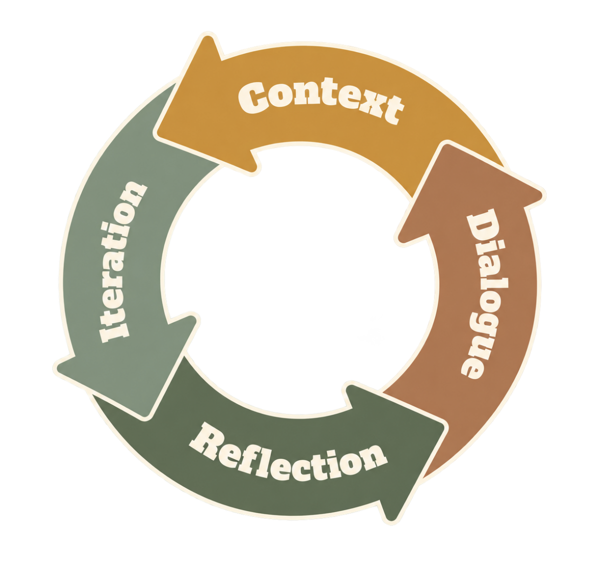

For the Well-being of HumanityHealth Is a Right for EveryoneFor a Better Future for Humanity, We Keep Going
Overview
Respiratory infections often present with similar clinical symptoms, despite being caused by different pathogens. As increasing global mobility accelerates pathogen transmission, older adults and children face not only the risk of disease progression while awaiting diagnostic assessment, but also an increased risk of cross-infection associated with repeated hospital visits. Settings such as nursing homes and kindergartens therefore have a particular need for rapid testing that can be performed close to those who need it.
We directly address the challenges posed by the rapid spread of respiratory pathogens in an increasingly globalized world, with a commitment to meeting global public health needs.
“Health is a human right, not a privilege, for everyone, everywhere.”
— World Health Organization
To this end, we developed ByeGerm, a portable, multiplex respiratory pathogen detection platform designed for point-of-use applications. By enabling the detection of multiple pathogens in a single run, delivering rapid results, and ensuring convenient operation, the platform aims to advance human well-being through synthetic biology and extend molecular testing beyond centralized laboratories to vulnerable populations and primary-level public health settings.
However, laboratory research alone cannot determine who needs testing most, which pathogens should be detected, how requirements for detection speed and operation should be established, or how a technology can be translated into a genuinely usable device. We therefore stepped beyond the laboratory and maintained an ongoing dialogue with members of the public, patients and their families, staff at nursing homes and kindergartens, clinical and public health professionals, and experts in molecular biology, engineering, and computational science.
Guided by five interconnected questions, we structured our Human Practices journey into five stages—LISTEN, DEFINE, BUILD, ENGINEER, and EXTEND—allowing each answer to drive further reflection and project iteration.
These exchanges directly shaped the development of our project. Real-world needs defined our target populations and intended application settings; epidemiological and clinical perspectives helped narrow our detection targets and establish performance requirements; expert recommendations led us to adopt RPA-CRISPR/Cas12a and employ DNABERT-assisted optimization; and feedback from frontline users further guided improvements in sampling methods, hardware architecture, the results interface, and operating procedures.
Following each interaction, we employed a four-step reflection cycle to revisit our initial assumptions, translate feedback into design requirements, and evaluate these requirements through experiments, prototype development, and scenario-based validation. Human Practices therefore shaped not only our project design but also the criteria by which we evaluated the detection platform. ByeGerm needed to achieve multiplex testing in a single run, rapid detection, and ease of use, while also addressing safety, accessibility, privacy protection, and long-term implementation. Furthermore, we sought to enhance public understanding through audience-specific science communication and explored sustainable implementation through an entrepreneurial pathway, with the long-term aim of enabling the device to serve as a distributed early-warning node connecting communities, primary healthcare institutions, and public health systems.
Yet our reflections gradually extended beyond ByeGerm itself. As we explored how societal needs could shape scientific innovation, we also began to consider how people from diverse backgrounds could gain more equitable access to science and opportunities for participation, and how the knowledge and experiences gained through our project could create value for a broader community. This led us to expand our Human Practices in two complementary directions: Inclusive Engagement, through which we sought to break down barriers to scientific participation; and Collective Growth, through which we fostered collaboration, knowledge sharing, and mutual learning. Together, these efforts extended our Human Practices beyond the refinement of a single project toward a more inclusive, socially connected, and broadly meaningful approach to scientific innovation.
To help you explore ByeGerm in greater depth, we've created an interactive map. Click to explore!
MapInteractive project map
To be provided
How Human Practices Shaped ByeGerm
ByeGerm was never defined by the laboratory alone. Throughout the project, different stakeholders continually prompted us to question our original assumptions, reassess our priorities, and modify our scientific design, engineering implementation, and application strategy. We therefore documented how Human Practices shaped ByeGerm across three dimensions: who participated in shaping the project, how we listened and responded, how we balanced innovation with ethics, and how both we and the project continued to evolve through these interactions.
Project Evolution
From Questions to Decisions: How Human Practices Shaped ByeGerm
ByeGerm did not emerge fully formed from an initial blueprint; it gradually took shape through continuous dialogue with stakeholders, critical reflection, and successive responses to real-world needs.
Our Human Practices journey began with a fundamental question:
What problem truly needs solving—and for whom?
By listening to the experiences of patients, caregivers, and frontline professionals, we gradually identified the unmet needs of vulnerable populations and clarified the purpose of our project.
Each question emerged from the insights and limitations revealed by the preceding stage, turning stakeholder engagement into an ongoing process of reflection, decision-making, and project iteration.
We therefore organized our Human Practices journey into five interconnected stages,tracing how societal perspectives progressively shaped ByeGerm, from identifying unmet needs to exploring its responsible integration into the real world.
Stakeholder Strategy
A diagnostic platform intended for real-world use is never defined solely by the laboratory.
From the beginning of its design, ByeGerm engaged with different groups and sought to incorporate their perspectives, which in turn influenced how the project could enter the real world safely and responsibly.
We therefore developed a stakeholder analysis strategy consisting of four progressive steps. In addition to asking who is connected to ByeGerm, we sought to understand who can change ByeGerm and who will be affected by it.
Step 1 Building the Stakeholder Map
This section explains how the project identified key stakeholders, prioritized communication, and translated feedback into design iterations. Based on Freeman's stakeholder theory, together with the distinction between direct and indirect stakeholders and Clarkson's classification of primary and secondary stakeholders， we used relevance—depth of engagement—directness of impact as three assessment dimensions and established a three-tier modelin a concentric-circle structure to organize the project's stakeholders.
These stakeholders directly use the device, participate in clinical validation, or determine whether the project can generate public health value. Their needs directly affect device functions, detection performance, and application settings and therefore constitute the primary basis for project design and evaluation.
Direct stakeholders
02Click to explore
These stakeholders have direct technical or commercial connections with the project and influence device production, cost control, distribution channels, and accessibility, thereby providing essential support for translating the project from the laboratory into real-world use.
Indirect stakeholders
03Click to explore
These stakeholders do not participate directly in research and development or use, but they influence the conditions for implementation through regulations, policies, public awareness, and educational environments, thereby determining whether the technology can achieve social acceptance and sustained development.
Step 2 Mapping the Power-Interest Matrix to Establish Management Priorities and Strategic Focus
Following the comprehensive stakeholder mapping, the team introduced a Power-Interest Matrix to assign strategic priorities to stakeholders and determine the order of communication. To improve precision, we applied triangulation and invited relevant stakeholders to score each group through the Delphi expert consultation method, assessing them in terms of influence and level of interest to identify the focus of collaboration at each stage.
Step 3 Differentiated Collaboration and Communication Strategies
High-power, high-interest groups (priority collaboration)
Stakeholder
Core need
Engagement strategy
Nursing homes and kindergartens
Local, rapid, and low-barrier testing adapted to older adults and children.
On-site interviews and device demonstrations to optimize the operating procedure and interaction design.
Patients and high-risk populations
Accessible testing, clear operation, and guidance on risk management.
Questionnaires, community visits, and in-person interviews to collect feedback continuously.
Medical institutions
Accurate and stable test results that can supplement screening outside hospitals.
Interviews with clinical and laboratory personnel to validate technical and clinical requirements.
Public health agencies
Multipathogen data, risk warnings, and support for primary-level deployment.
Discussions with disease control and epidemiology experts regarding the pathogen panel, data, and deployment approach.
These groups can influence implementation and are directly concerned with testing reliability, safety, and long-term public health value. The team established long-term collaborative relationships with them and incorporated clinical and primary-level disease-control needs early in the research and development process.
Nursing homes and kindergartens require screening solutions that are rapid, easy to use, and adapted to older adults and children. Through on-site interviews and device demonstrations, the team identified operational difficulties and used these findings to optimize the device architecture, prompts, and operating procedure.
Patients and high-risk populations are concerned with testing accessibility, operational comprehensibility, and guidance on risk management. We combined online questionnaires, community visits, and in-person interviews to collect feedback continuously and incorporated user experience into product iteration.
Medical institutions focus on the accuracy and stability of test results and on whether the device can effectively supplement screening outside hospitals. The team communicated with healthcare professionals in respiratory medicine, laboratory medicine, and infectious disease departments and continuously validated the device against clinical workflows and performance requirements.
Public health agencies require multipathogen surveillance data, risk-warning capabilities, and tools for primary-level deployment. We discussed pathogen panels, data use, and deployment approaches with experts in disease control, epidemiology, and statistics and determined a combined testing panel for RSV, hMPV-B, SPN, BP, and HI.
After integrating needs from multiple parties, the team further explored analyses linking immune indicators with testing data and, in view of immunosenescence in older adults and the immaturity of children's immune systems, developed a primary-level disease-control chain encompassing local testing, data reporting, risk warning, and targeted intervention.
High-interest, low-power groups (continuous communication)
Stakeholder
Core need
Engagement strategy
Industry partners
Scalable production, distribution, and compatibility with payment systems.
Continuous coordination to optimize processes, hardware architecture, and product solutions.
Industry partners focus on the feasibility of mass production, distribution through existing channels, and compatibility with health insurance. The team maintained communication with its partners to optimize processes, hardware architecture, and product solutions and to connect research and development with manufacturing, distribution, and payment.
Low-interest, high-power groups (compliance-oriented communication)
Stakeholder
Core need
Engagement strategy
Researchers in relevant fields
A scientifically reliable detection system with engineering feasibility.
Expert consultation and academic discussion to optimize the full technical workflow.
Regulatory authorities
End-to-end compliance with ethical and industry standards.
Policy research and expert consultation to establish a compliance feedback channel.
Policymakers
A technology aligned with public health needs and capable of broader implementation.
Adjustment of the product and application plan based on primary-level research and policy requirements.
Although regulatory authorities and policymakers do not participate in routine research and development, they determine market access, compliance boundaries, and the conditions for policy support. Because these stakeholders focus on risk controllability, clinical value, and health-economic significance, the team adopted a strategy of early communication, evidence-based support, and compliance from the outset.
We continuously reviewed ethical guidelines, industry standards, and relevant regulations, established a feedback channel connecting research and development with compliance and policy, and consulted experts in ethics, clinical medicine, public health, and regulation regarding experimental data, technical parameters, and application procedures.
Policymakers are more concerned with whether the technology addresses public health needs and can be implemented in priority settings. We investigated high-risk congregate settings in advance, optimized the product design in response to challenges in primary-level disease control, and continued to monitor relevant industry standards and policy priorities.
Researchers in relevant fields focus on the scientific reliability and engineering feasibility of the detection system. We conducted focused discussions on molecular design, computational modeling, and hardware architecture and optimized the technical plan through multiple rounds of expert feedback.
Low-interest, low-power groups (science communication and engagement)
Stakeholder
Core need
Engagement strategy
Educational institutions
Life science and public health resources adapted to different educational levels.
Courses, models, exhibitions, and science communication materials.
The public
Clear, credible science communication content adapted to different audiences.
Audience-specific science communication with continuous optimization based on feedback.
Educational institutions and the public do not directly determine the project plan, but they are important audiences for science communication and equitable access to technology. The team translated knowledge of synthetic biology and rapid testing into science communication content that was understandable, participatory, and shareable.
Educational institutions require teaching resources adapted to different educational levels. We provided childcare institutions and schools with illustrated materials, experimental models, traveling exhibitions, and course plans, translating project content into classroom teaching and science and innovation activities.
Members of the public vary considerably in age, knowledge background, and preferred modes of engagement. We conducted audience-specific science communication for maternal and infant groups, older adults, adolescents, and special-education communities and continuously adjusted the content and format based on feedback.
Step 4 Review and Adaptation
While implementing the stakeholder analysis and communication strategies described above, we found that several groups could be classified more precisely, which would improve the specificity of subsequent communication strategies and support better planning. Following discussions with Professor Hui Li of Jilin University on refining the model, we subdivided high-risk populations and other relevant stakeholders and supplemented the corresponding engagement plans. The team also systematically reviewed stakeholder engagement practices throughout the project to provide iGEM with a practical framework for reference.
DocumentStakeholder review and adaptation · 02
To be provided
Stakeholder communication is not a one-time research interview but a continuous dialogue spanning the entire project life cycle. After each round of research and field practice, the team reviews the information collected and updates its communication strategy accordingly. This cyclical adjustment mechanism enables the project to remain aligned with the real needs and values of the populations it serves while maintaining scientific rigor.
Reflection Cycle
This cycle formed the basic framework for our Human Practices. In every engagement with stakeholders, it helped us understand the problem, listen to different perspectives, reflect on our understanding, and translate the resulting insights into practical project improvements. By continuously reviewing our objectives, actions, and results, we ensured that ByeGerm's design was technically feasible and genuinely responsive to needs in real-world settings.
Our reflection cycle consists of four interconnected stages.

Context — We clarify the background of each interaction by reviewing the project's current stage, the problems it faces, and the key perspectives we hope to obtain through the exchange.
Dialogue — We communicate with stakeholders through interviews, questionnaires, and other methods and record their lived experiences, needs, and recommendations.
Reflection — We organize and analyze the feedback and consider how these perspectives challenge and reshape our original assumptions.
Iteration — We translate the reflections into practical actions, continuously optimize the design, and use the results to initiate the next round of improvement.
C.A.R.E.S. Ethical Evaluation Framework
C.A.R.E.S. Ethical Evaluation Framework
Throughout our IHP work, we consistently protected the rights and interests of vulnerable populations, including older adults and children, and integrated ethical care into project practice. Based on continued practical exploration and accumulated experience, we developed the C.A.R.E.S. Ethical Evaluation Framework to provide systematic ethical guidance for the project's research, development, and application.
Compassion
Care ethics emphasizes attention to audience needs and the reduction of physical and psychological burdens. The project incorporated humanistic care into device design and health education.
Child-friendly design: To address children's fear of medical devices, we created an illustrated comic-style user manual that uses vivid visual expression and narrative guidance to reduce anxiety.
Age-friendly interaction for older adults: In response to the visual and auditory characteristics of older adults, the device uses a high-contrast, large-font interface and provides reassuring voice announcements, such as, “Testing is complete, and the result is negative. Please do not worry, and remember to keep warm.”
Community health education: Through Human Practices activities, the team visited early childhood education institutions, postpartum care centers, primary and secondary schools, and nursing homes to explain routine respiratory protection to different age groups and reduce the cognitive burden and anxiety associated with complex technical information.
Autonomy
In accordance with the protections for groups with limited decision-making capacity specified in the Belmont Report and the Declaration of Helsinki, the project safeguards the rights of older adults and children to information, choice, and data protection through special safeguards and proxy consent mechanisms.
Informed consent: With reference to hospital ethics review standards, the team prepared informed consent forms, provided participants and their guardians with complete explanations before field activities and device testing, and obtained signed confirmation.
PDFInformed consent · 03
To be provided
PDFInformed consent · 04
To be provided
Data and privacy protection: The accompanying software supports real-time data upload. The project applies data de-identification and encryption to ensure that testing data generated domestically are stored only on local servers within the country and to mitigate the risk of cross-border data leakage.
Reliability
The World Health Organization's guidelines on public health ethics emphasize transparent disclosure of the limitations of surveillance technologies. The team clearly defined the device's scope of application and used rigorous validation to ensure data integrity and prevent a false sense of security among the public.
Patents and approvals: Multiple patent applications have been filed for the device, which has also passed the relevant medical device approval procedures, supporting its subsequent application.
Third-party validation plan: The team plans to transfer the core assets to a third-party in vitro diagnostics company that complies with Good Manufacturing Practice standards for industrial-grade blinded testing, with an expected target of CV < 5%, to further validate device stability.
Scope of application: The PDF product manual to be formally released later will define the device as an auxiliary tool for primary-level public health surveillance and early screening and warning, and will explain its applicable scope and limitations.
Equity
The Nuffield Council on Bioethics emphasizes that public health interventions should address health inequalities. Guided by equity and accessibility, the project reduces barriers to testing arising from economic conditions and geographic disparities.
Adaptation to low-resource settings: The device has been optimized for low power consumption, can be powered by a solar power bank, and retains an intuitive LED indicator mode, thereby reducing the operational burden on primary-level care staff.
Primary-level education and implementation: The team visited nursing homes, kindergartens, schools in remote areas, and county-level communities to demonstrate the device and provide operational instruction, reducing barriers associated with geographic and resource disparities.
Participatory design with special populationsInclusive Engagement: The team produced Braille picture books and tactile models of the detection technology, collected tactile feedback from students with disabilities, and used this feedback to optimize Braille prompts and button design on the device enclosure.
Safety
Following the principle of nonmaleficence in biomedical ethics, the project identifies and reduces potential biological, physical, and psychological risks to users, operators, and communities.
Research safety: We maintained a policy of no involvement of living organisms and used plasmids and synthetic genomic sequences to simulate the genetic characteristics of pathogens, avoiding the use of the corresponding living pathogens and reducing biosafety risks.
Material safety: The device enclosure is produced by 3D printing and coated with environmentally friendly automotive paint, with strict screening of processing materials and coatings to reduce potential risks to users and the environment.
Algorithmic safety: The AI model is used exclusively to process and analyze experimental fluorescence signals, improving readout accuracy and specificity while reducing manual reading errors and the risk of misclassification.
The C.A.R.E.S. framework extends across research and practical application and provides ethical constraints and safeguards for project innovation through five dimensions: humanistic care, informed consent, reliability and transparency, equity and accessibility, and safety.
Stage 1 — LISTEN
Explore the Context
What problem truly needs solving-and for whom?
We responded to international public health needs by addressing the major challenge of rapid, on-site testing for emerging and acute infectious diseases. Through extensive surveys and interviews across Changchun, we identified respiratory infectious diseases as a critical public health issue and established the need for portable, intelligent monitoring. We then conducted targeted research with patients and high-risk populations, including older adults and young children, carried out random interviews in a hospital, and visited sentinel nursing homes and kindergartens in Changchun, where we learned about the difficulties vulnerable populations face in receiving treatment for infectious diseases. These findings motivated us to explore an intelligent platform for acute respiratory infectious disease detection that could perform rapid in vitro testing and automated analysis. In a subsequent interview with Dean Juan Li, we gained further insight, confirmed our research direction, and established the principles of multiplex testing in a single run, rapid testing in a single run, and testing accessible to everyone.
1 Listening to the Public
Context
While examining the difficulties people face in obtaining medical care, we sought to identify a project direction with both public health value and scientific significance. To translate community insights into clear data, we used the stakeholder model to design several research methods for different groups, including an online questionnaire distributed through the WeChat public platform, an in-person public health questionnaire, creative cards, and a sticker wall. We adopted these more interactive approaches to improve participation and collect feedback through JLU-SPH activities, with the aim of understanding residents' awareness of common diseases and access to medical services. This demonstrated how listening to the community can guide innovation toward the issues that matter most.
We collected 385 valid questionnaires from respondents spanning all age groups. Respondents aged 31–50 years, the main group responsible for family caregiving, accounted for 45%, while those aged over 51 years accounted for 28%. We used multiple-choice questions to quantify overall patterns in public understanding of respiratory diseases and open-ended questions to capture individualized concerns, thereby addressing both breadth and depth.
Reflection
The survey results clearly showed a high level of public concern regarding respiratory health and a shared recognition that older adults and children are high-risk populations, confirming that our public health goals were aligned with societal needs. Particularly notable was the strong demand for portable testing devices, which supported the forward-looking nature of our direction in technological innovation and was consistent with our aspiration to improve human life through synthetic biology.
1. High awareness of respiratory health across all age groups
The data indicated a broadly shared and consistently high awareness of respiratory infectious diseases. Both younger and older groups expressed substantial concern for their own health and that of their families, demonstrating a society-wide consensus. This finding indicates that rapid and convenient health-monitoring methods are a fundamental and indispensable need in modern family health management.
2. Strong consensus regarding the high-risk status of older adults and children
Respondents showed remarkable consistency in their understanding of susceptible populations. The public regarded children and the elderly as being at a clear disadvantage when exposed to respiratory viruses and believed that these groups require closer and more timely health protection than the general adult population. This finding helped focus the project's market positioning on older adults and children.
The public expressed exceptionally high recognition of the value of portable testing devices, particularly among families responsible for caring for children or older adults. Respondents believed that such a device could address the operational inconvenience of conventional testing methods while providing a more compassionate form of health protection for special populations. These responses indicate substantial market potential and broad application prospects for portable testing devices in household settings.
Because the public demonstrated high awareness of respiratory health across all age groups, we confirmed that rapid and convenient testing was a core requirement for the project and therefore prioritized response time and ease of operation as design criteria. In addition to advancing research on the detection method, we planned to seek further expert perspectives through future interviews.
In response to widespread public concern regarding older adults and children as high-risk groups, we defined these populations as the product's primary target users and adjusted the applicable settings and interaction design accordingly to lower operational barriers for both groups. Because we also recognized that public understanding of respiratory infection prevention and management is generally limited, we immediatelyplanned our educational work Educationto improve understanding. This work would address respiratory pathogens themselves and explain our testing device, thereby distinguishing it from conventional centralized-laboratory testing.
In response to strong public expectations for a portable testing device, we further established that the product had to combine portability with humanistic care by achieving rapid and accurate detection while accommodating the needs of special populations in the user experience. This requirement led us to maintain communication with target users during subsequent engineering design Stage 4 — ENGINEERto verify whether the solution genuinely addressed the practical difficulties they encounter in routine care.
2 Random Interviews at the Third Hospital of Harbin Medical University
Random Interviews at the Third Hospital of Harbin Medical University — photograph
1 / 3
Context
Our earlier public survey showed widespread concern about respiratory infections and repeated recognition that older adults and children are more susceptible. To validate these public concerns in an actual clinical setting, we conducted random interviews at a hospital affiliated with Harbin Medical University.
Dialogue
During the hospital visit, we observed large numbers of patients in the pediatric and geriatric departments, with substantial crowding in both wards and waiting areas. Healthcare professionals explained that older adults and children often recover slowly after infection, that reduced mobility creates difficulties for older adults, and that children are frequently unable to describe their symptoms clearly, all of which increase the time required for treatment and care. Our conversations with patients, parents, nurses, and physicians also revealed a practical expectation: if rapid testing could first be completed in routine settings such as nursing homes and kindergartens, risks could be assessed earlier while reducing repeated travel and cross-infection.
Reflection
These random interviews transformed the survey category of older adults and children from an abstract data point into a concrete clinical reality. Crowded pediatric and geriatric departments suggested that these groups may face higher infection risks and have a greater need for testing that is close to daily life, easy to operate, and rapid in producing results.
Iteration
We therefore decided to extend the next stage of interviews from hospitals to more specific care settings. We first visited a nursing home to understand the difficulties experienced by older adults and care workers in identifying pathogens and managing closed facilities, and then visited a kindergarten to hear teachers and parents describe the pressures associated with childhood fever, absence, and infection control.
3 Dialogue with Nursing Home Care Workers and Residents
Dialogue with Nursing Home Care Workers and Residents — photograph
1 / 0
Context
After the hospital interviews, we brought our questions to a nursing home. Because older adults often have reduced mobility and multiple underlying conditions, the onset of respiratory symptoms makes repeated hospital visits especially difficult, and we therefore wanted to hear directly from care workers and residents about their actual needs.
Dialogue
Care workers explained that the nursing home's greatest concern was the spread of infectious disease. Because the pathogen cannot be identified rapidly, the facility often has no option other than to suspend visits, reduce activities, and place all residents under observation. Residents also noted that although they understood the need for infection control, prolonged closure made daily life monotonous. If preliminary testing could be completed within the facility, care workers could decide more quickly whether isolation, medical care, or continued observation was appropriate.
Reflection
Nursing homes do not require complex equipment but rather an on-site testing tool that care workers can use after basic training. It must be rapid, stable, and easy to interpret, helping facilities replace indiscriminate closure with more targeted management.
Iteration
We therefore distributed health handbooks and explained respiratory infectious disease prevention in the nursing home to reduce residents' fears. To protect the rights and interests of older adults, we arranged for nursing home care workers to sign informed consent forms on their behalf.
Dialogue with Kindergarten Teachers and Children — photograph
1 / 2
Context
After leaving the nursing home, we continued to a kindergarten. Children are also a high-risk population, but they often cannot describe their symptoms clearly, and communal living increases the risk of transmission, so we sought to understand the principal concerns of teachers and parents.
Dialogue
Teachers explained that when a child develops a fever, the kindergarten often has no option other than to ask the parents to take the child home for observation. Parents were also concerned about repeatedly taking leave and visiting the hospital for what might be an ordinary cold. Both groups preferred an initial rapid screen at the kindergarten to distinguish routine discomfort from an infection risk that might require further action.
Reflection
The kindergarten setting showed that testing must be accurate, gentle, rapid, and easy to perform. The technology can enter routine infection-control practice only if teachers and parents can understand it and use it with confidence.
Iteration
This feedback further clarified that the device should serve sentinel settings such as nursing homes and kindergartens, allowing preliminary screening in kindergartens or homes and reducing unnecessary anxiety and travel for medical care.
After hearing these deeply human appeals, we broadened our perspective from these supportive indoor settings to the wider world. We recognized that globalization creates opportunities for development and convenience while also facilitating the transmission of respiratory infectious diseases. Emerging and acute pathogens can spread rapidly worldwide and pose a continuing challenge to global public health security. In this context, rapid and accurate screening in a nursing home or kindergarten protects the immediate population and also serves as the first barrier against the undetected spread of an outbreak through the community.
Targeted disease control in primary-level communities and global public health security are closely connected through the shared need for rapid testing. This connection led us to consider whether a technical platform could meet the stringent requirements of nursing homes and kindergartens for simple operation and speed while creating an early-warning network for infectious diseases extending from sentinel sites to the wider world. This broader vision gave the project social value and contemporary relevance beyond the technology itself and prompted us to seek more specialized judgment from public health experts.
5 Dialogue with Dean Juan Li
Dialogue with Dean Juan Li — photograph
Context
Once the project had a clear plan and vision, we presented our project proposal to Dean Juan Li of the School of Public Health at Jilin University and held an in-depth discussion regarding the current status and needs of community surveillance for respiratory infectious diseases, with the aim of understanding actual sectoral requirements and standards.
Dialogue
Dean Juan Li affirmed our direction. She noted that the prevention and control of respiratory infectious diseases is an urgent global issue and that the project should move testing forward to primary-level and on-site settings while shortening the testing time and simplifying the procedure without compromising accuracy. A system that could accept a sample and produce a result within a short period while supporting multiple pathogens would have substantial application value.
Reflection
This discussion confirmed that the problems identified by nursing homes and kindergartens were not confined to individual settings but reflected a common need in primary-level public health surveillance. Rapid testing can contribute during an acute outbreak only if it is genuinely rapid, accurate, simple, and deployable.
Iteration
Following our discussion with Professor Juan Li, we refined the project objective to a portable, rapid, and safe intelligent platform for respiratory pathogen detection. Beyond representing a technical innovation, the platform explores a model of public health service. It aims to translate technological capabilities into reassuring protection that integrates unobtrusively into the daily lives of older adults and children and gives those who care for them greater confidence.
We also recognized that the rigor of a responsible scientific project must extend through every stage, from objective setting and process monitoring to final implementation. We therefore initiated a series of parallel, interdisciplinary expert consultations and preparatory activities.
Stage 2 — DEFINE
Turn Needs into Requirements
What should we detect, where,and to support which decisions？
At the beginning of the project, we adopted a dual-track research strategy to ensure that our research direction was precisely aligned with major needs in the public health disease-control system and practical challenges on the front line. We first held discussions at the strategic level with leading experts from centers for disease control and prevention in five provinces across China and then engaged directly with clinical practice by interviewing medical experts from different departments, listening to the perspectives of direct users to ensure that the design details matched actual conditions.
1 Roundtable with Public Health and Disease Control Experts
Roundtable with Public Health and Disease Control Experts — photograph
Context
Previous activities had revealed a need for on-site testing in settings such as nursing homes and kindergartens. To determine whether this need was also consistent with the logic of public health surveillance, we attended a roundtable with public health and disease control experts and asked whether sentinel settings could provide a window for early detection.
Dialogue: We spoke with six experts from disease control systems and healthcare-associated infection management across China.
Experts and roles
Chao Zhou, Deputy Director of the Institute of Prevention and Control at the Chongqing Center for Disease Control and Prevention
Jie Cui, Director of the Institute of Health Education and Promotion at the Anhui Provincial Center for Disease Control and Prevention
Xiaoxiao Zhang of the Institute of Immunization Planning at the Henan Provincial Center for Disease Control and Prevention
Jiaqing Xiao, Deputy Director of the Heilongjiang Provincial Center for Disease Control and Prevention
Liguo Zhu, Director of the Institute of Acute Infectious Disease Control and Prevention at the Jiangsu Provincial Center for Disease Control and Prevention
and Li Li, Director of the Department of Healthcare-Associated Infection Management at the Affiliated Hospital of Inner Mongolia Medical University
The experts endorsed moving testing closer to the point of need but cautioned that an on-site device must support actual response procedures rather than merely serving as a smaller version of laboratory equipment. It must be sufficiently rapid, support preliminary screening for multiple pathogens, and record results to support subsequent tracing, reporting, and trend assessment.
Reflection
The roundtable advanced the project's positioning from a portable testing device to an early-warning node for primary-level settings. The device's value lies in producing a result and in helping communities detect risks earlier and determine the next step more rapidly.
Iteration
Based on this discussion, we focused the project on four attributes: rapid, multiplex, portable, and deployable. We then prepared the Community Collaborative Emergency Response Guide so that device design and community response procedures could operate in coordination. The experts also made us recognize that multiplex testing cannot expand indefinitely and that we first had to identify the pathogens that genuinely warranted inclusion.
2 Interview with Deputy Dean Changgui Kou of the School of Public Health at Jilin University
Context
The roundtable confirmed the need for multipathogen testing, but the number of respiratory pathogens is large and an on-site device cannot cover all of them. We therefore identified several respiratory pathogens through a literature review and consulted Professor Changgui Kou of the School of Public Health, seeking to define a limited but useful panel based on public health significance, susceptible populations, symptom similarity, and value for clinical management.
Dialogue
Professor Kou recommended constructing a panel around pathogens that are prevalent in children and older adults, are easily confused, and affect subsequent clinical assessment. Based on his recommendation, we ultimately selected five detection targets: respiratory syncytial virus (RSV), human metapneumovirus subtype B (hMPV-B), Streptococcus pneumoniae (SPN), Bordetella pertussis (BP), and Haemophilus influenzae (HI).
Reflection
This discussion transformed our general intention to detect respiratory pathogens into a defined set of detection targets. The panel covers both viruses and bacteria and requires the project to address multiplex targets and compatibility among different nucleic acid types.
Iteration
We continued to review epidemiological evidence and conserved sequences for the five pathogens, establishing a basis for subsequent target selection and validation. Once the pathogen panel was defined, we began visiting frontline healthcare professionals to understand the time requirements, coverage, and setting-specific limitations of existing testing methods.
3 Interviews with Frontline Physicians to Define Clinical Needs and Device Positioning
The purpose of these interviews was not to demonstrate again that patients encounter difficulties, but to understand current respiratory pathogen testing in hospitals, the technologies and scope of centralized-laboratory testing, and the settings that cannot readily enter hospital workflows. This work further clarified the positioning of the portable testing device. We sought to address settings beyond the reach of centralized laboratories and fill gaps in time and location at nursing homes, kindergartens, remote areas, and primary-level sites.
1 Respiratory Medicine: Dr. Junyao Li — photograph
Context
We first sought to understand the routine testing pathway for patients with fever and cough in hospitals and physicians' need for rapid triage. We therefore visited Director Junyao Li of the Department of Respiratory Medicine at the Second Hospital of Jilin University.
Dialogue
Dr. Junyao Li noted that hospital testing largely depends on centralized laboratories. Routine tests may require several hours or until the following day, while complex or outsourced tests take longer, even though early outpatient triage often cannot accommodate an extended wait.
Reflection
Hospital testing is standardized and accurate, but its complex procedures depend on sampling, transport, queuing, and reporting workflows and cannot readily provide immediate assessment in nursing homes, kindergartens, or remote areas. She recommended that we emphasize instrument portability and develop a compact device that could function under basic medical conditions.
Iteration
We consequently positioned the portable device as a preliminary screening tool used before centralized-laboratory testing, providing an early indication of risk in non-hospital settings and helping determine whether medical care, referral, or specimen submission is required. This feedback informed subsequent design specifications, particularly testing time, number of covered pathogens, operational requirements, and interpretability of results.
To understand the actual capabilities of hospital laboratory testing, including accuracy, throughput, quality control, and limitations in multipathogen detection, we interviewed Dr. Huimin Li of the Department of Laboratory Medicine at the Second Hospital of Jilin University.
Dialogue
Dr. Huimin Li explained that centralized laboratories can provide more standardized nucleic acid testing and quality control but require professional personnel, equipment, and procedures. The number of pathogens covered varies across platforms, and reporting time is also affected by sample volume and test type.
Reflection
This finding showed that the portable device should not simply seek to replace laboratory testing, but should instead address the gap in on-site preliminary screening and direct suspected samples back to a centralized laboratory for confirmation when necessary.
Iteration
We translated the laboratory department's feedback into questions for subsequent validation: the concordance between portable testing and centralized-laboratory results, the time from sample to result, the stability of simultaneous testing for five pathogens, and the risk of false negatives in low-load samples. These questions were incorporated into subsequent experimental evaluation and requirements validation.
3 Infectious Diseases: Dr. Shangwei Ji — photograph
Context
Given the susceptibility associated with respiratory pathogens, we examined how hospital test results affect isolation, treatment, and infection prevention and control. We therefore interviewed Dr. Shangwei Ji of the Department of Infectious Diseases at the Third Hospital of Jilin University, focusing on the effect of reporting time on clinical management.
Dialogue
Dr. Shangwei Ji emphasized that when pathogen results arrive too late, management must initially rely on experience. In nursing homes, kindergartens, and primary care clinics, early risk assessment can help reduce indiscriminate isolation, repeated sampling, and unnecessary transport.
Reflection
The clinical value of portable testing lies in assessing the patient's transmission risk and need for further testing at an earlier stage rather than replacing physicians' clinical judgment.
Iteration
We accordingly established that the device should support risk stratification and on-site decision-making. Positive or suspected results should enter hospital or disease-control confirmation pathways, while negative or low-risk results can inform continued observation. We began preparing the instrument user manual, incorporated management pathways for different settings into the operating procedure, and refined the procedural boundaries through scenario-based validation.
To better understand the practical difficulties of testing children and the need for preliminary screening in kindergartens, we interviewed Director Xin Tian of the Department of Pediatrics at the Second Hospital of Jilin University.
Dialogue
Director Xin Tian noted that children often cannot describe their symptoms clearly and cooperate poorly with sampling, while parents also experience pressure from waiting for test results and making repeated hospital visits. Kindergartens particularly need to determine whether further medical care or isolation is necessary.
Reflection
The pediatric setting showed that portable testing can reduce unnecessary travel and help teachers and parents identify risks earlier, although kindergartens do not perform the diagnostic function of hospitals.
Iteration
We translated the pediatric feedback into a definition of the application setting. Kindergartens and homes can serve as entry points for preliminary screening, but results should primarily provide risk information, and abnormal findings must enter formal medical pathways. Subsequent design evaluation will focus on the acceptability of pediatric sampling, waiting time, and the cognitive burden on parents.
5 Geriatric Medicine: Dr. Lihong Huang — photograph
Context
Older adults in nursing homes and those with limited mobility have the greatest difficulty making repeated hospital visits and are especially susceptible to respiratory infections. We therefore focused on geriatric medicine and interviewed Director Lihong Huang.
Dialogue
Dr. Lihong Huang explained that older adults frequently have multiple underlying conditions and face higher risks after infection. Sending nursing home samples for testing and transporting residents are inconvenient, and although the accuracy of centralized laboratories is important, these laboratories may not support immediate assessment within the facility.
Reflection
This discussion further confirmed that a portable device should address limitations of location and time by enabling nursing homes to obtain preliminary risk information before deciding whether to continue observation, initiate isolation, submit a sample, or seek medical care.
Iteration
We identified nursing homes and remote areas as priority settings for subsequent validation. The next step is to work with physicians and care staff to define the boundaries of use and document them in the user manual, including who may operate the device, which results require reporting, and which circumstances require referral. This information was first incorporated into the clinical requirements list as a basis for subsequent design and validation.
Stage 3 — BUILD
Shape the Science
How should real-world needs reshape our science?
At the beginning of the study design, we first considered the distinctive characteristics of the intended testing settings. Infections caused by respiratory pathogens such as RSV commonly affect infants, young children, older adults, and immunocompromised populations, while settings such as nursing homes, childcare institutions, and remote mountainous areas often have limited professional testing personnel and equipment. Testing technologies intended for these settings must combine high sensitivity with simple operation, rapid reactions, compact equipment, and on-site applicability. We therefore sought to establish a nucleic acid detection system better suited to primary-level and on-site use.
1 Interview with Professor X. Chris Le of the University of Alberta
Interview with Professor X. Chris Le of the University of Alberta — photograph
Context
We initially considered established testing technologies such as PCR and RT-qPCR but found that their requirements for instruments, thermal cycling, and laboratory conditions were inconsistent with the intended application of portable respiratory pathogen testing. We therefore held an in-depth discussion with Professor X. Chris Le of the University of Alberta, Canada.
Dialogue
Professor X. Chris Le recommended prioritizing a one-pot RPA-CRISPR/Cas12a method because it combines rapid isothermal amplification by RPA with the specific recognition and fluorescence output of Cas12a and is therefore more suitable for rapid, simple, sensitive, and portable testing.
Reflection
Optimization of the one-pot system should not rely on empirical adjustment of multiple parameters but should use single-variable gradient experiments to identify sources of interference progressively. A complete set of controls is particularly important for an integrated system because it can determine whether an abnormal signal originates from amplification, Cas12a cleavage, or false signals caused by background fluorescence.
Iteration
We changed the detection strategy from its initial emphasis on PCR to a one-pot RPA-CRISPR/Cas12a method, making it more consistent with the requirements for portable, rapid testing with limited equipment dependence. We subsequently planned to optimize the reaction system and device architecture, including primer and crRNA design, fluorescence readout, reaction stability, and the feasibility of multiplex detection, and to continue refining the approach based on subsequent experimental results.
2 Interview with Professor Tianyi Zhao of the Harbin Institute of Technology
Interview with Professor Tianyi Zhao of the Harbin Institute of Technology — photograph
1 / 0
Context
During wet-laboratory validation of the RPA-CRISPR/Cas12a system, we found that fluorescence signals were insufficiently stable for low-copy samples in parallel multipathogen testing, suggesting that the existing primers or target sequences required further optimization. Because we lacked a more standardized primer-screening mechanism, we discussed the problem with Professor Tianyi Zhao of the Harbin Institute of Technology.
Dialogue
This type of problem is better addressed by incorporating machine learning, particularly sequence language models. Such models can improve screening efficiency, characterize sequence-context features and latent patterns at higher dimensionality, and provide a complementary assessment of specificity in complex backgrounds.
In machine-learning models, the quality of the training set often determines final performance. Three considerations are important when constructing the training set.
Positive samples must be sufficiently diverse; otherwise, the model will have limited generalizability to mutational backgrounds.
Negative and background samples must be selected specifically, particularly to cover closely related sequences most likely to be confused with the target viruses.
Data partitioning must be strictly controlled to prevent highly similar samples from appearing across the training, validation, and test sets.
Reflection
After speaking with the professor, we clarified the central optimization logic for sequence screening, moved beyond conventional sequence-alignment approaches, and established that a machine-learning model was critical to resolving the challenges of multivirus screening and that scientifically constructing the training set was a prerequisite for effective model performance.
Iteration
Based on this recommendation and a literature review, we selected DNABERT-6 as the base model and positioned it as a front-end semantic sequence-screening module. For the six target viruses and their closely related backgrounds, we reconstructed the candidate sequence pool and applied a standardized workflow for PAM-site scanning, candidate-window extraction, and embedding representation. This approach moved the starting point for optimizing the detection system to an earlier stage.
3 Interview with Professor Xingfang Li of the University of Alberta
After introducing DNABERT-6 for sequence representation, we found that screening individual primers or crRNAs alone was insufficient to predict their combined performance in a one-pot RPA–CRISPR/Cas12a assay. The forward and reverse primers define the amplicon, while crRNA recognition is also influenced by its position within the amplicon. Therefore, we discussed with Professor Xing-Fang Li from the University of Alberta how to integrate these factors to rank complete primer–crRNA combinations.
Dialogue
During our discussions, we shifted the focus of sequence design from individual components to complete primer–crRNA combinations. Simply concatenating primer and crRNA sequences would fail to preserve their original positional relationships. We therefore proposed representing four sequence inputs separately: the amplicon, forward primer, reverse primer, and crRNA spacer. This approach would capture both the amplification context and the sequence characteristics of individual components. In addition, we incorporated features such as primer GC content and melting temperature (Tm), amplicon length, and the relative position of the crRNA, and used wet-lab experiments to evaluate the resulting rankings.
Reflection
We recognized that the performance of a one-pot assay depends on both amplification efficiency and Cas12a-mediated target recognition. Consequently, primers or crRNAs that perform well individually may not necessarily form the optimal combination. Integrating four separate sequence representations with interpretable numerical features and performing relative ranking among combinations targeting the same sequence better aligns with our screening objectives. This strategy also avoids directly comparing absolute fluorescence measurements reported across different studies.
We used the amplicon, forward primer, reverse primer, and crRNA spacer as four separate sequence inputs. Each input was converted into overlapping 6-mers and processed using a shared, frozen DNABERT-6 encoder for feature extraction. The resulting representations were then reduced to 64 dimensions through separate projection layers and concatenated to produce a 256-dimensional sequence representation.
We combined the four sequence representations with 19 physicochemical and positional features to construct a 275-dimensional input, which was subsequently scored using a multilayer perceptron (MLP). During training, each group consisted of one previously published combination and 120 enumerated candidates targeting the same sequence. The model learned preferences among candidate combinations through within-group relative ranking. In total, we constructed 112 groups comprising 13,552 combinations and evaluated the model using data splits based on sequence homology clusters.
We applied the model to the RSV N gene, which had not been included in the training dataset, and experimentally evaluated the combinations ranked 1st, 2nd, 3rd, and 10th. The three highest-ranked combinations exhibited earlier fluorescence responses, whereas the 10th-ranked combination showed a noticeable delay. We subsequently selected the second-ranked combination for sensitivity and specificity testing. Through this process, we established an integrated workflow encompassing four-stream sequence encoding, combination ranking, and wet-lab validation.
4 Interview with Professor Tsan-Yuk Lam of the University of Hong Kong
Interview with Professor Tsan-Yuk Lam of the University of Hong Kong — photograph
Context
After screening primers through machine learning, we began experimental work. However, when we advanced the RPA-CRISPR/Cas12a system to a one-pot format, the overall activity decreased. We hypothesized that this problem might result from interference by RPA components, depletion of dNTP substrates, accumulation of pyrophosphate by-products, and cross-hybridization between primers and crRNAs. To address the problem, we consulted Professor Tsan-Yuk Lam of the University of Hong Kong regarding actionable strategies for system optimization.
Dialogue
Professor Lam explained that interference among multiple components is a common bottleneck in one-pot RPA-CRISPR systems and should be addressed through small gradient adjustments. Single-factor experiments should be conducted in separate modules for different sources of interference. Pyrophosphatase or other auxiliary components could be added to address pyrophosphate accumulation, while bioinformatic prediction and in vitro incubation experiments could be used to exclude sequences at risk of primer-crRNA interactions. System optimization must also include separate RPA-only, Cas-only, and no-template negative controls to distinguish inhibited amplification, reduced Cas activity, and increased background noise.
Reflection
Optimization of the one-pot system should use single-variable gradient experiments to identify sources of interference progressively. A complete control design is particularly important for an integrated system because it helps determine the source of an abnormal signal.
Iteration
Based on Professor Lam's recommendations, we divided system optimization into independent single-factor experiments and sequentially adjusted magnesium-ion concentration, pH, and the primer-to-crRNA ratio across gradients. We also added tests for pyrophosphate accumulation and primer-crRNA hybridization and established multiple control groups to distinguish signal sources. We will continue to iterate the reaction system according to fluorescence results so that the one-pot assay becomes more stable and remains integrated with the preceding screening and simulation results.
Can ByeGerm truly work for its users-and what must we redesign?
During preliminary dry- and wet-laboratory validation, we successfully established a fluorescence detection workflow based on RT-RPA and CRISPR-Cas12a, providing the technical basis for highly sensitive portable testing. To move this system beyond the laboratory, however, we had to develop a corresponding integrated instrument that simulated the PCR testing process and provided stable temperature control, reliable fluorescence acquisition, and intelligent signal analysis. We subsequently completed a first-generation single-channel instrument. HardwareVisits to target users and medical experts identified the need for parallel multipathogen testing, and interviews on microfluidics and instrument design guided the upgrade to a second-generation multichannel instrument（Hardware）. Finally, we conducted contextual validation with older adults, children, and convalescent patients. The overall process formed a closed loop extending from the detection method, hardware control, and signal analysis to the real user experience.
1 Interview with Professor Zheng Hu of the Harbin Institute of Technology
Interview with Professor Zheng Hu of the Harbin Institute of Technology — photograph
Context
Preliminary dry- and wet-laboratory experiments had established the RPA and CRISPR-Cas12a fluorescence detection workflow, but the laboratory reaction system could not directly meet the requirements of primary-level field use. We therefore interviewed Professor Zheng Hu of the Harbin Institute of Technology to discuss how the detection reaction could be translated into a stable and reproducible device workflow.
Dialogue
He recommended developing a portable testing instrument that simulated the operating principle of PCR and reproduced the core functions required for PCR-type testing at the instrument level: controlling the reaction temperature, acquiring fluorescence signals, and converting the signals into interpretable results.
Reflection
We recognized that instrument development should not simply add hardware but should transform a laboratory chemical reaction into a complete process that can be performed on site. Testing can be implemented in practice only when the temperature is stable, fluorescence readings are reliable, and every user can interpret the result.
Iteration
We accordingly defined three core requirements. The instrument had to provide stable heating and temperature control, acquire fluorescence data reliably, and support intelligent signal analysis.
2 Interview with Professor Yingtao Zhang of the Harbin Institute of Technology
Interview with Professor Yingtao Zhang of the Harbin Institute of Technology — photograph
Context
During instrument development, once the space required by the experimental system had been sufficiently reduced, we had to determine how the hardware could meet experimental conditions while converting results into data. Our first question was how weak fluorescence could be read reliably in a nonprofessional environment and converted into an intuitive, visible result. We therefore interviewed Professor Yingtao Zhang, a computer science expert at the Harbin Institute of Technology, to identify a solution for signal acquisition and analysis.
Dialogue
She explained that a portable device need not depend entirely on bulky, high-end optical instruments. A miniature computing board and a lightweight computer-vision model could compensate for hardware limitations, and mobile devices commonly use YOLO and OpenCV to identify fluorescent regions and remove background noise.
Reflection
This discussion changed our initial assumption that signals had to be read solely with high-precision optical sensors. We recognized that reliable readings depend on both a stable physical environment and intelligent image and data processing and that a portable instrument should integrate temperature control, acquisition, and computation in a unified design.
Iteration
Based on this recommendation, we completed the first-generation single-channel instrument.
A ceramic heating element, an 18B20 temperature sensor, and a PID algorithm provided temperature control from 25 to 95 °C.
The optical module was fixed at a distance of 50 mm for light-shielded acquisition.
An Orange Pi 5 Max equipped with an RK3588 chip served as the computing platform, on which YOLOv8n and OpenCV were deployed, while an app supported task configuration, temperature monitoring, and fluorescence recording.
3 Collecting Feedback from Nursing Homes and Kindergartens
Collecting Feedback from Nursing Homes and Kindergartens — photograph
1 / 2
Context
We had previously interviewed and surveyed nursing homes and kindergartens Stage 1 · Nursing home dialogue and recorded primary-level requirements for a portable testing instrument. After completing the first-generation single-channel instrument, we returned to these principal use settings to learn from frontline staff about the device's practical limitations in throughput, speed, and operating procedure.
Dialogue
We brought the first-generation instrument to nursing homes and kindergartens and communicated with and demonstrated it to staff and care workers. They explained that fever and cough in older adults and children can have many causes and that a single-channel instrument, which detects only one pathogen at a time, could not support rapid assessment during an outbreak involving cross-infection.
Reflection
Primary-level settings involve large sample volumes, limited time, and insufficient personnel and therefore require information on multiple pathogens from a single operation. Multichannel capability consequently became essential to practical device implementation.
Iteration
We expanded the research and development objective from single-channel detection to a complete multitarget detection task and initiated development of the second-generation multichannel instrument. The device was designed to accommodate reactions for different pathogens, positive and negative controls, and replicate experiments simultaneously, providing sufficient throughput for subsequent on-site screening.
4 Interview with Professor Ying Mou of Zhejiang University
Interview with Professor Ying Mou of Zhejiang University — photograph
Context
Defining a multichannel objective introduced a new engineering problem: how to accommodate multiple reaction tubes without substantially increasing instrument size or power consumption while preventing thermal interference between the sample-lysis region and the main reaction region. We therefore sought structural recommendations from Professor Ying Mou of Zhejiang University.
Dialogue
She recommended spatial multiplexing, using a rotating switching mechanism that would allow a fixed optical system to read multiple reaction tubes sequentially and avoid configuring a complete optical module for every channel. She also advised isolating the pretreatment region from the main reaction region to control the effect of lysis on reaction temperature.
Reflection
Multichannel operation required a comprehensive redesign of spatial organization, thermal isolation, and electromechanical control. The instrument could remain stable after increasing capacity only if these modules were designed and coordinated as a unified system.
Iteration
Based on these recommendations, we developed the second-generation multichannel instrument.
1. We added an independent lysis region with two pretreatment positions, separated from the main reaction region by thermal insulation.
2. We redesigned the main reaction region as a three-sided rotating chamber with 15 positions.
3. We used an STM32F407ZGT6 as the principal control chip and designed front and top flip covers for loading.
4. The app was updated to include rotational servo control and image recognition across multiple tube positions, allowing multiple results and fluorescence curves to be displayed on a mobile device.
After completing the second-generation instrument, we sought to respect users' experiences and opinions while meeting the requirements of primary-level testing. We therefore conducted interviews and research to validate the improved design quantitatively. Traditional questionnaires, however, were unsuitable for most older adults, children, and patients because they could distort the data and place an additional burden on participants.
We therefore replaced the conventional Likert-scale questionnaire with three contextual interactive validation tools tailored to the three populations, drawing on Montessori educational principles and Universal Design and integrating the research activity directly into the testing process.
Dialogue
1. The “Auditory and Tactile” Blind-Testing Box for Older Adults
The “Auditory and Tactile” Blind-Testing Box for Older Adults — photograph
1 / 0
Interaction mechanism: After healthcare professionals demonstrated the ByeGerm testing process to older adults, we asked participants how they felt about using the instrument for screening and gave each person two sticky notes of different colors: green represented easy to use or clear, and red represented difficult to use or unclear. Participants only needed to place the corresponding sticky note in the ballot box.
Statistical results: We collected 60 sticky notes, of which 70% were green. This result was more persuasive than any paper-based response of “very satisfied.”
2. The “Monster Capture” Sticker Wall for Children
The “Monster Capture” Sticker Wall for Children — photograph
1 / 0
Interaction mechanism: We presented the sampling process as a game of “defeating monsters,” asked children how they felt about screening with the ByeGerm instrument, and allowed them to indicate their choice with a sticker.
Crying monster (afraid or worried), calm kitten (neutral or acceptable), and superhero (happy or fun)
The Retrospective Empathy Survey for Patients — photograph
Interaction mechanism: Because conducting a questionnaire during the acute phase of illness would be both inhumane and impractical, we drew on narrative medicine to design a contextual retrospective questionnaire for convalescent participants.
Task: We invited patients who had recovered from fever or completed their recovery to fill out the questionnaire in the follow-up area of a community hospital.
The questionnaire guided patients to recall sensory memories from their illness and assess whether the new device would genuinely have helped them.
Data obtained: We collected 200 valid retrospective questionnaires within three weeks.
Among respondents,：
90% reported that viewing results intuitively on a mobile device was the design feature they would have most wanted while experiencing fever.
85% reported that bedside testing and the flip-cover design for preventing cross-infection reduced the psychological anxiety they experienced while ill.
This endorsement from convalescent patients demonstrated that our design addressed patients' needs at their most vulnerable and provided meaningful support.
Reflection
The three types of feedback addressed comprehensibility, acceptability, and perceived safety in the field.
1. The entry point for operation and the result prompts were generally clear.
2. The device's appearance and operation did not cause an evident increase in fear.
3. The multiplex design, bedside testing, and safety features corresponded to genuine needs.
Iteration
We also recognized that high acceptance did not mean the design was complete, and that app compatibility and the operating guide still required further optimization. After collecting sufficient expert opinions and user feedback, we completed the second-generation instrument's
Instructions.
Stage 5 — EXTEND
Share and Carry Forward
What would responsible, equitable,and sustainable adoption look like?
From Responsible Adoption to Sustainable Translation
Here, we began to confront a new question. Once a prototype is usable, what should happen next?
For ByeGerm, this meant assessing whether the platform could responsibly enter real-world settings, whether users and institutions would accept it and sustain its use over time, and what evidence would be needed before broader application. To make this reasoning clearer, we organized our work into two connected parts.
Real-world adoption is far from straightforward. It depends on standardized use, sustainable manufacturing, clear communication, and equitable access. We therefore returned to healthcare administrators, industry partners, target users, and communities to ask what still stood between a technically functional device and a place in everyday life.
1 | Should it go further?
Interview with Department Head Xie Linshen
Interview with Department Head Xie Linshen — photograph
Context
Earlier validation showed that real users could operate ByeGerm, but we did not know whether the device was ready to enter public health and healthcare management workflows. We therefore sought help from Professor Xie Linshen.
Dialogue
Director Xie Linshen emphasized that performance validation alone is not enough to bring an on-site testing device into real-world use. Its intended role, application settings, operators, result interpretation, and follow-up management must all be defined. Quality control, procedures for handling abnormal results, documentation, and traceability must also be established, while screening results need to be linked to confirmatory testing, referrals, and public health responses.
Reflection
We realized that translation cannot end when the device is complete. Screening becomes actionable only when the chain of responsibility surrounding each result is equally clear, including who interprets it, who confirms it, and what happens after an abnormal finding.
Iteration
We therefore explicitly positioned ByeGerm as a tool for initial screening and risk alerts, rather than a substitute for clinical diagnosis. Going forward, we will incorporate quality control, result recording, confirmatory testing, and referral procedures into our operating protocols and user guidance accordingly.
2 | Can it last?
Meeting with Zhang Jinming of Guangzhou Zhikang Medical
Meeting with Zhang Jinming of Guangzhou Zhikang Medical — photograph
Context
As we considered commercializing the product, we found that a laboratory prototype can demonstrate functionality but cannot establish the ability to maintain a long-term supply. For primary-level public health applications, we also need to consider manufacturing consistency, materials, safety, maintenance, cost, and whether regulatory compliance is realistically attainable.
Dialogue
We discussed the device structure, manufacturing methods, material selection, and production costs with manufacturing engineers, examining each aspect in turn. Our current use of 3D printing and environmentally friendly coatings facilitates rapid iteration, but larger-scale production would require further work on structural consistency, process stability, material safety testing, quality control, and regulatory certification.
Reflection
Low cost cannot simply mean cheaper individual components. A sustainable public health product must remain manufacturable, maintainable, safe, and affordable throughout long-term use.
Iteration
We continued simplifying the structure and manufacturing processes while bringing materials, production, safety testing, and compliance verification into an integrated assessment of mass-production readiness. We also applied for a utility model patent to establish an intellectual property foundation for future translation and collaboration.
3 | Will people accept it?
Once we had established standards and protections for the product, we began to consider whether target users would accept the testing device and how they might better understand it. While collecting public feedback on satisfaction with the device (see Stage 4.5), we also began public education activities about the instrument. We hoped to increase willingness to be tested among target groups and replace one-way promotion with an approach to acceptance that was driven by feedback and adapted to different populations.
3.1 Age-Adapted Education
Context
Our early conversations showed that unfamiliar devices and procedures could make children anxious, whereas technical terminology and complicated steps could discourage older adults. Before targeted communication, 70% of older adults and 64% of children said they would voluntarily accept testing.
Age-Adapted Education — dialogue with an older adultChildren — reducing unfamiliarity and fear of the device
Dialogue
We brought the device back to nursing homes and kindergartens, documenting users’ responses through observation and individual conversations. Older adults needed more direct explanations of results and demonstrations of the procedure. Children first wanted to know whether the test was safe and whether it would hurt, showing that written instructions alone could not establish trust.
Reflection
We recognized that acceptance is not merely a promotional concern to address after a product is finished. If users cannot understand the device or feel too apprehensive to approach it, even strong technical performance cannot make it a genuinely usable public health tool.
Iteration
For older adults, we replaced technical terms with everyday language and added illustrated steps and guided demonstrations. For children, we used cartoon explanations and a simplified procedure to explain the test. In a follow-up survey, willingness to accept testing rose from 70% to 93% among older adults and from 64% to 95% among children.
3.2 Respiratory Virus Testing Strategy Cards
Context
For the general public, one-way explanations and device demonstrations often communicate only that a technology exists. They do not necessarily foster a real understanding of viral transmission, how testing works, or the limits of the technology.
Dialogue
We turned respiratory transmission and testing principles into a strategy card game and invited people to try it on site. Participants became more willing to discuss transmission, testing, and prevention, while their questions revealed that some biological concepts were still overly complex.
Making an activity enjoyable can lower barriers to participation, but scientific accuracy cannot be sacrificed. Effective science communication goes beyond making an explanation understandable. It should invite people to reason through the concepts while clearly distinguishing the game’s abstractions from the actual technical principles.
Iteration
We simplified the rules, added scientific explanations to the instructions, and aligned the card scenarios with ByeGerm’s real testing settings. We also added a scope statement that distinguishes artistic representation from the underlying scientific principles. The result was a more reusable and standardized science communication package.
PDFCard game instructions
To be provided
3.3 Volunteer Teaching in Tang County, Hebei — Extending Accessibility Further
Context
As our age-adapted communication in urban settings became more established, we turned our attention to students in county-level areas who had less exposure to advanced medical technologies and synthetic biology education resources.
Device model and interactive experiencePublic health education in a county-level classroom
Dialogue
In classrooms in Tang County, traditional blackboard teaching often caused students to lose focus. Teachers told us that abstract theories were difficult to remember. The purpose of school screening education was not to train students as operators, but to help them understand why screening has a protective value.
Reflection
This feedback gave equity a more concrete meaning. Equitable access to resources involves not only the availability of devices, but also opportunities to understand them and the psychological accessibility of the technology. Even when a technology is physically available, unfamiliarity and complexity can keep it disconnected from everyday life.
Iteration
We removed difficult terminology and used everyday analogies and intuitive illustrations to explain key concepts. We also stepped away from the podium to demonstrate a model device and let students operate it themselves. The activity thus became a bridge between access to technology and access to understanding.
→ For our broader accessibility work, see Inclusive Engagement Inclusive Engagement
Responsible adoption requires a clear chain of responsibility, sustainable manufacturing, comprehensible interactions, and equitable opportunities to understand and participate, all progressing together. These findings naturally led us to another question. If ByeGerm is to move forward, what product form and translation pathway can carry these responsibilities?
1 | From Human Practices to Responsible Translation
1.1 Needs × Technology × Institutions
Needs asks whether we are addressing a problem that is time-sensitive, on-site, and actionable. Technology asks whether our scientific and engineering choices truly suit the intended settings. The institutional dimension asks who can operate the system, how results lead to confirmation and referral, what constitutes sufficient evidence, how quality and data should be governed, and what the registration pathway should be. As new evidence emerged, our reflection cycle continually recalibrated these three dimensions.
ByeGerm framework for responsible translation.
1.2 Where Do We Start?
Customer discovery did not lead us toward the entire respiratory testing market. Instead, it pointed to settings where waiting for results has immediate consequences, workflows can be validated directly, and the approach could later be replicated. We therefore screened potential settings against three criteria—urgency of need, accessibility, and replicability—and prioritized
nursing homes, kindergartens and childcare facilities, primary care and fever clinics, and municipal public health sentinel sites.
Six unmet needs identified through stakeholder feedback
Need
What stakeholders revealed
System response
Rapid decisions on site
Institutions need results within the critical window for isolation, referral, or retesting.
Speed targets and on-site workflows
Multipathogen information
Similar symptoms can call for different courses of action.
A multipathogen panel rather than a single low-information result
Usability by non-specialists
Care workers, teachers, and primary-level staff cannot reproduce laboratory procedures.
Enclosed handling, guided operation, and intuitive presentation of results
Age-friendly design
Older adults and children face different physical and psychological barriers.
Age-adapted instructions, interactions, and sampling
Biosafety and accountability
Institutions are concerned about waste, misinterpreted results, and who is responsible after results are available.
Enclosed handling, waste-disposal SOPs, and clear boundaries for confirmation and referral
Public health data
Disease control authorities need trends and unusual clusters, not isolated device-level data.
Authorization, de-identified aggregation, and a concept for sentinel-site reporting
2 | What are we actually bringing forward?
From an Assay Reaction to a Minimum Viable System
From an entrepreneurial perspective, we redefined what constitutes the product. Rather than a single device, our MVP became a minimum viable system comprising a disposable, enclosed microfluidic test cartridge, a portable reader, an AI-assisted interpretation interface, and setting-specific SOPs. The biological reaction establishes whether measurement is feasible; the complete system addresses whether non-specialists can understand the results and what should happen once the results are available.
3 | What evidence allows us to move forward?
Responsible translation requires clear boundaries around the evidence. Laboratory performance cannot be treated as proof of readiness for routine institutional deployment, and positive usability feedback cannot replace clinical validation. We therefore distinguish Laboratory Validation, Usability Validation, Scenario Validation, and Translation Readiness. Our current work at two sentinel sites primarily supports SOP design, prototype discussions, and scenario validation. Integration into routine morning screening, long-term operation, and real-world performance remain objectives for future validation.
A Public Health Perspective — Vice President Ye Wei of Nanjing Second Hospital
A Public Health Perspective — Vice President Ye Wei of Nanjing Second Hospital — photograph
Context
At this point, we were no longer asking only whether the device could operate within a particular institution. We began to ask which aspects of daily life a portable platform could reach, and which responsibilities would have to expand as its reach grew.
Dialogue
Vice President Ye Wei noted that the value of portable testing should not be limited to nursing homes and kindergartens. Households, communities, and primary healthcare institutions have different needs for initial screening, while disease control systems are more concerned with how testing data can be aggregated in compliance with regulations. Single-channel and multichannel devices should also be configured to meet the throughput and operational requirements of different settings, rather than simply replacing one another.
Reflection
This interview showed us that the settings for portable instruments can be expanded, but the boundaries of their use and the chain of responsibility must expand alongside them. Rather than discarding the first-generation instrument, we can use it for routine testing at the primary-care level and help protect respiratory health together.
Iteration
We therefore retained distinct roles for the two generations of devices. The first generation has a simpler structure and can support on-demand initial screening in households, for individuals, and in small-scale care settings. The second-generation multichannel device is better suited to centralized screening in nursing homes, kindergartens, communities, and primary healthcare institutions. At the same time, we abandoned the idea of scaling immediately in favor of a phased, evidence-gated translation pathway. For details, see the Hardware page.
Evidence-gated translation roadmap with explicit rollback conditions.
Our next step, therefore, is not simply to scale up, but to continue validating the system. If future clinical evidence, regulatory authorization, manufacturing consistency, and secure data governance can support this concept, distributed ByeGerm nodes may eventually contribute de-identified early signals in a compliant manner, gradually connecting communities, primary healthcare, and public health systems.
For us, the question of how far it can go is inseparable from the question of what evidence allows it to move forward. Stage 5 ultimately changed our understanding of EXTEND. Responsible innovation does not end when a prototype begins to work. As a technology reaches further, the evidence, responsibilities, and boundaries surrounding it must advance with it.
Expanding the Circle of Human Practices
Opening
Through the five stages , we explored how societal needs and stakeholder perspectives could shape ByeGerm into a more responsible and practical solution.
Yet our Human Practices journey also led us to reflect on two broader questions: Who has the opportunity to participate in and benefit from scientific innovation? And how can collaboration extend the value of our work beyond our own team?
These questions inspired two complementary dimensions of our work: Diversity and Inclusivity, through which we sought to reduce barriers to scientific participation; and Collaboration, through which we exchanged perspectives, shared knowledge, and explored opportunities for collective growth.
Together, they broadened the scope of our Human Practices from project-centered development to wider social participation and shared learning.
Inclusive Engagement: Science for Every Voice
Introduction: When Science Meets Inclusivity, Innovation Gains Warmth
In the world of synthetic biology, we are not only engineers exploring the code of life, but also gardeners sowing the seeds of science. We firmly believe that the appeal of this discipline should not be confined within laboratory walls. It should travel across mountains and rivers, break through barriers of understanding, and reach every mind eager for knowledge in the warmest possible way. Inspired by the spirit of iGEM, our journey is one of reverence and creativity: transforming the precise logic of life science into a universal language that resonates with people of different life experiences.
1 Wonderful Building Blocks of Life: Exploring Synthetic Biology with Kindergarten Children
Wonderful Building Blocks of Life: Exploring Synthetic Biology with Kindergarten Children — photograph
Background
At the age when children are most curious, an introduction to science can feel like a game. We believe that the seeds of synthetic biology can be planted as early as kindergarten—allowing children to touch with their own hands and observe with their young eyes, turning the mysteries of life into intuitive and enjoyable experiences. At the same time, we fully recognize the special requirements of activities for young children and the paramount importance of safety. All activities are therefore conducted under professional guidance and in strict accordance with safety standards.
Target
Kindergarten students and preschool children aged 4–6.
Objectives
1. Introduce young children, through highly simplified and game-based activities, to the core synthetic biology idea that “life is made up of tiny parts and can be designed.”
2. Stimulate children’s curiosity about living phenomena and develop their observation and hands-on skills while ensuring absolute safety.
3. Provide teachers and parents with a practical model for early-childhood science education and promote synthetic biology education across all age groups.
Process
We designed a series of games called “Little Cell Engineers,” conducted in kindergarten classrooms or community activity centers:
Storytelling: The “Little Factory” Inside a Cell
Using picture books and hand-puppet performances, we compare a cell to a “little factory inside the body,” where various “small machines” (organelles) work together with different roles.
We emphasize the concept of “design.” For example, replacing a “small part” (an analogy for gene editing) can make the little factory produce something different.
Craft Activity: Making My DNA “Little Ladder”
Using child-safe modeling clay (food-grade safety certified; see Record 1), we guide children to alternate two colors of clay to simulate the DNA double-helix structure and intuitively understand the spiral form of the “code of life.”
Each child can take home their own “DNA model” and receive a “Little Life Designer” sticker.
Role-Playing: I Am an RNA “Messenger”
In a designated play area, children act as RNA carrying a “code” (colored building blocks), delivering instructions from the “nucleus” (starting point) to the “ribosome” (destination). This simulates gene expression and lets them experience the dynamic nature of life through movement and teamwork.
Safety Notes
PDFKindergarten safety resource · 1
To be provided
PDFKindergarten safety resource · 2
To be provided
PDFKindergarten safety resource · 3
To be provided
What We Learned
When a child proudly held up a modeling-clay DNA model and said, “This is the ladder of life I made!”, we saw science education in its purest form. Young children are not incapable of understanding synthetic biology—as long as it is presented in their own language and logic. This experience prompted us to reflect that the highest form of science communication may not simply be the simplification of knowledge, but a return to the starting point of cognition: understanding the world again through our original curiosity. It also strengthened our conviction that safety is the non-negotiable foundation of all science outreach for children, and that rigor and creativity can always go hand in hand.
2 Beyond Mountains and Seas, Sowing Seeds of Hope: Building Scientific Dreams with Students in County-Level Communities
Beyond Mountains and Seas, Sowing Seeds of Hope: Building Scientific Dreams with Students in County-Level Communities — photographBeyond Mountains and Seas, Sowing Seeds of Hope: Building Scientific Dreams with Students in County-Level Communities — photographBeyond Mountains and Seas, Sowing Seeds of Hope: Building Scientific Dreams with Students in County-Level Communities — photograph
1 / 3
Background
At the edges of the information highway, across the fertile Central Plains and the mountains of Northwest China, countless eyes shine with a desire to explore the world. These students dream of distant horizons, yet rarely have the opportunity to encounter cutting-edge science. We hope to be a gentle breeze carrying the seeds of synthetic biology to this land full of potential.
Target
Students in counties and towns across Central, Northeastern, and Northwestern China
Objectives
By introducing the concepts and practical applications of synthetic biology, we aim to broaden students’ scientific horizons, cultivate innovative thinking and problem-solving abilities, and help bridge gaps caused by the unequal distribution of educational resources.
Process
We brought our carefully designed introductory course, “Life Systems Engineers,” into classrooms in counties and towns. Here, “gene circuits” became creative building blocks that students could assemble with their own hands, while complex cell factories were transformed through role-playing into an engaging “miniature city.” We shared stories of young innovators from the iGEM competition, allowing the fascination of synthetic biology to blossom amid laughter and excitement.
What We Learned
When a usually quiet student privately showed us his sketch of a “future eco-friendly bacterium” after class, we saw the light in his eyes. At that moment, we understood that the essence of science communication is not how much knowledge we can impart, but whether we can ignite an innate curiosity. As long as we are willing to listen closely, even the most remote places can nurture ideas capable of changing the world.
3 Wisdom in Silver Years, Science in a New Light: Exploring the Mysteries of Life with Older Adults
Wisdom in Silver Years, Science in a New Light: Exploring the Mysteries of Life with Older Adults — photograph
Background
The life wisdom and composure of older adults offer a unique key to understanding life science. They have witnessed decades of technological change and possess deeply personal perspectives on health. Yet in today’s rapidly developing world, they often feel distant from cutting-edge technology. We hope to break down this divide, make synthetic biology tangible and perceptible, and listen to their health-related needs.
Target
Older adults living in nursing homes
Students at universities for older adults
Objectives
We hope more people will pay attention to vulnerable groups. This year, our JLU-SPH team designed an age-friendly portable testing device. The right to express one’s needs should never belong only to the majority. This time, we hope to shift the focus of education toward the “minority groups” around us.
Process
We visited community activity centers and held welcoming salon-style events:
We began with traditional fermentation practices such as making yogurt and brewing, using them as analogies for the precise control found in modern synthetic biology. Enlarged DNA double-helix and organelle models allowed older participants to explore the structures by touch. We also held health-focused discussions, introducing how biosensors work and their future applications through topics such as respiratory health. Finally, we invited participants to share the changes in medical technology they had witnessed, creating a dialogue between lived experience and new technologies.
PDFOlder-adult education resource · 4
To be provided
What We Learned
A retired teacher held our hands and said, “I taught biology all my life, but today I truly ‘saw’ these intricate little machines inside the cell. Science has come so far, yet its purpose is still to help us live healthier lives with greater dignity.” This helped us realize that the warmth of science lies not only in technological advancement, but also in the respect and care it extends to every stage of life.
4 Sound as a Bridge：Listening to the Rhythm of Life: Opening the Door to Science for People with Visual Impairments
Sound as a Bridge：Listening to the Rhythm of Life: Opening the Door to Science for People with Visual Impairments — photograph
Background
The world of life is rich and diverse, but the appeal of science extends far beyond visual presentation. We believe that the intricacies of synthetic biology can also be conveyed through the melody of sound, the touch of fingertips, and the wings of imagination.
Target
People with visual impairments and students in inclusive education who are interested in life science.
Objectives
Our goal is to explore and establish a new accessible, multisensory model of science learning. We aim to demonstrate that, through creative instructional design, students with visual impairments can also understand abstract biological concepts, thereby ensuring equal opportunities to learn and participate in science.
Process
We collaborated with an association for people with visual impairments to create an immersive workshop called “Listening to the Cell Factory.” Specially designed modular pieces allowed participants to feel the construction logic of “gene circuits” with their hands. We even introduced safe edible materials so that participants could identify microbial “outputs” through smell and taste. At the same time, we created an accessible synthetic biology handbook for blind readers to help them better understand synthetic biology.
PDFBraille learning material
To be provided
PDFBraille comparison material
To be provided
What We Learned
A participant with a visual impairment said with emotion, “Words like ‘gene’ used to feel very distant to me—like images under a microscope. But today, I ‘heard’ their activity and ‘touched’ their structures. I never realized science could feel so approachable.” These words made us deeply appreciate that when science is made perceptible in different ways, it can become a bridge connecting people and minds.
5 A Dialogue Across Continents: Envisioning the Future of Science with Young People Around the World
A Dialogue Across Continents: Envisioning the Future of Science with Young People Around the World — photographA Dialogue Across Continents: Envisioning the Future of Science with Young People Around the World — photograph
1 / 0
Background
Science knows no borders, and the meeting of different ideas is one of the strongest sparks for innovation. We built cross-cultural bridges to explore the limitless possibilities of synthetic biology together with young people from around the world.
Target
Young students from countries around the world.
Objectives
Promote in-depth exchange among young people from different cultural backgrounds in the field of synthetic biology, inspire innovative thinking, cultivate a global perspective, and explore the potential of synthetic biology to address global challenges as well as its prospects for cross-cultural application.
Process
In a relaxed international salon, we organized exchanges on multiple levels:
1. Pre-event cultural preparation: Learn in advance about the scientific, technological, and cultural characteristics of participating countries and prepare examples that resonate across cultures.
2. Themed roundtable discussions: Set topics such as “Synthetic Biology and Localized Innovation” and encourage students from different countries to share their perspectives.
3. Cross-cultural team challenge: Form mixed teams to complete innovation tasks, such as designing biological solutions for specific cultural contexts.
4. Collaborative proposal presentations: Each group presented its proposal and received questions and suggestions from different cultural perspectives. In the relaxed international salon, we were not only speakers but also listeners. Korean students shared insights on technology commercialization, British students discussed ethical standards, and Canadian students emphasized cultural inclusivity. Together, we completed a creative challenge: designing a synthetic biology tool that would help an “alien visitor” understand life on Earth.
What We Learned
“I never imagined that a scientific discussion could be so interesting and inclusive,” a British student remarked. This dialogue strengthened our belief that synthetic biology is not only a discipline, but also a new language capable of crossing cultural boundaries and promoting mutual understanding.
6 Lighting a Spark in the Community: Discussing the Scientific Frontier with Guardians of Public Health
Lighting a Spark in the Community: Discussing the Scientific Frontier with Guardians of Public Health — photographLighting a Spark in the Community: Discussing the Scientific Frontier with Guardians of Public Health — photograph
1 / 0
Background
Within local communities, frontline healthcare workers are the most caring guardians of residents’ health. They possess extensive practical experience and safeguard public health every day, yet they are often separated from the frontiers of scientific research.
Target
Community and rural doctors, staff at Centers for Disease Control and Prevention, and other frontline healthcare workers.
Objectives
Establish a dialogue mechanism between researchers and frontline healthcare workers, connect research outcomes with real-world needs, and enable synthetic biology technologies to better serve community health. This year, our JLU-SPH team designed a portable testing device, and we aim to bring synthetic biology into frontline public health. Through this effort, we hope to protect everyone’s health and safeguard public health security.
Process
We organized a series of salon events called “Clinic of Tomorrow”:
1. Technology demonstration: Explain synthetic biology in accessible language and demonstrate how biosensors work and what advantages they offer.
2. Comparative case analysis: Compare the applicable scenarios and limitations of traditional testing methods and new technologies.
3. Needs-focused discussion: Listen to the practical challenges encountered in frontline work and explore technological solutions.
4. Collaboration outlook meeting: Jointly plan feasible pathways for technology deployment and models for cooperation.
Even more valuable was the opportunity to listen to their most genuine difficulties and expectations in daily work. These “frontline insights” provided precious direction for our project and brought synthetic biology closer to the real needs of the public.
What We Learned
An expert from a Center for Disease Control and Prevention with thirty years of experience said with emotion, “Synthetic biology is developing so rapidly and is tremendously helpful to our daily work. The most ingenious technologies are often born from the most urgent needs.” These words made us deeply aware that the most vital innovations must arise from sincere dialogue between science and practice.
7 Breaking Gender Bias in Research: “Her Power” — Face to Face with Women Scientists, Envisioning the Future of Synthetic Biology
Dean Juan LiProfessor Xingfang LiProfessor Ying Mou
1 / 3
Background
In the possibility-filled landscape of synthetic biology, countless women researchers are expanding the boundaries of the field through distinctive perspectives, persistent exploration, and extraordinary creativity. Their stories are powerful expressions of the scientific spirit, yet they are often hidden behind names on research papers and the lights of laboratories. We believe that making these intelligent, graceful, and powerful faces and stories visible is itself an important form of inspiration.
Target
Young women who are curious about synthetic biology and life science, especially female students in secondary school and university.
Objectives
We aim to go beyond the traditional one-way model of “role-model promotion” and achieve three levels of objectives through in-depth interaction:
Build genuine connections: Break through the abstract aura surrounding the idea of a “scientist.” Through close conversation, present the vivid, diverse, and deeply human growth paths and everyday lives of women researchers, helping young women feel that “they are like me, and I can become like them.”
Present diverse pathways: Showcase the broad applications of synthetic biology and its many career possibilities—not only as researchers, but also as entrepreneurs, policymakers, and science communicators—expanding young women’s imagination of what a career in science can look like.
Inspire active exploration: Turn the power of role models into concrete guidance, encouraging and teaching young women how to take their first steps into scientific practice, such as participating in the iGEM competition, and transform aspiration into action.
Process
We designed the activity as an immersive journey combining “online resonance and offline connection”:
1. WeChat Official Account column, “Seeing Her Power”: Rather than focusing on distant legends, we turn our attention to local young women scientists, especially scholars whose research relates to public health and disease detection. Each article follows a “One Question, One World” format centered on a key question, such as “How did you turn an experimental failure into a new direction?” or “Can the sensitivity often associated with women become an advantage in scientific research?” Through plain and sincere writing, we present their thoughts, choices, and passion.
2. Offline “A Day in Research Life”: Invite scientists featured in the column or outstanding local women research mentors to small, highly interactive salon sessions. This is more than a lecture; it offers a glimpse into the actual workplace. Participants can handle everyday laboratory consumables, watch simple demonstration experiments, and join mentors in a roundtable discussion on “How My Research Went from an Idea to Reality,” asking questions that may seem “naive” but are genuinely important.
3. “My First Step” Action-Planning Workshop: After the salon, we hold a dedicated workshop led by women members of our team. They share their experience participating in iGEM and provide step-by-step guidance on how interested students can begin literature research, develop an initial project idea, and find like-minded partners. We provide a “starter resource kit” that breaks ambitious goals down into small, immediately actionable steps.
What We Learned
A high school student who participated in the offline event wrote in her feedback: “I used to think women scientists were the serious, unreachable geniuses you see on television. But today, the teacher I met talked about the joy of growing flowers and also worried about setbacks in her experiments. Suddenly, I felt that maybe I could try walking that path too.” Her words deeply moved us. We realized that advancing equality requires not only showing the successful “results,” but also honestly presenting the “process”—full of attempts, confusion, and persistence. When young women see that behind shining achievements are real people who share similar emotions and face similar difficulties, courage and confidence can truly take root. This experience taught us that the most powerful encouragement comes from “authentic visibility” and “sincere companionship.”
Collective Growth: Learning Beyond Boundaries
🌍 Overview
Synthetic biology should not exist in isolation. This season, guided by the theme “Symbiosis in Action,” we built a multidimensional collaboration network spanning disciplines, borders, and communities. From leading international academic summits to grassroots dry-lab support, from open-source software development to human-centered care and knowledge transfer, we transformed every Connection into a tangible Response that contributes to the shared growth of the iGEM community.
Part 1: Global & National Summits
1 US-China iGEM Human Practices Summit
Background: As synthetic biology becomes increasingly integrated into everyday life, it is essential to examine its impact and integration in real-world contexts.
What We Did: We were invited to participate in the international “People in the World of SynBio” summit, jointly hosted by Peking University and Rice University. This multi-day international event combined asynchronous presentations with live sessions. We submitted a five-minute project video and also presented our project at a live virtual exhibition open to the public.
Impact: Our project underwent rigorous review under two thematic tracks, Healthcare and Medicine and Policy and Education. Feedback from invited experts—including professors, industry leaders, and medical professionals—directly helped us refine our commercialization pathway and substantially broadened the international perspective and depth of our Human Practices work.
ImageProject presentation video still
To be provided
ImageOfficial summit poster
To be provided
2 CCiC & APIc Conferences
What We Did: At CCiC in Dalian, one of the largest iGEM conferences in China, we presented our project and engaged in in-depth technical discussions with teams from across the country during the poster session. We then joined the APIc Asia-Pacific exchange, where we discussed with overseas teams from diverse cultural backgrounds how broadly our biosafety lock could apply across different national regulatory frameworks.
Impact: These two conferences helped us move from a focus on local implementation toward a broader understanding of global compliance and created several prospects for deeper cross-regional collaboration.
What We Did: To address challenges faced by large language models in bioinformatics analysis, we held in-depth discussions with HUBU-WUHAN, AFMU-China, LZU-GANSU, and JLU-FBH. We examined the Multi-Agent architecture of the BioAI Agent (v2.0) platform and jointly organized the “2026 Summer Dry Lab Skills Outreach Lecture.”
Impact: We explored an innovative workflow using large language models such as DeepSeek to assist in generating PyMOL code for protein visualization, substantially lowering the barrier to dry-lab modeling for interdisciplinary teams.
2 Dialogue with ZJUT-China at the Bio-manufacturing Expo
What We Did: At an exhibition hosted by the National Bio-manufacturing Industry Innovation Center, we met the Zhejiang University of Technology (ZJUT-China) team in person and conducted an in-depth review of their “G-SCOUT” project poster.
Impact: During the poster session, we learned about each other’s projects and exchanged ideas. ZJUT-China’s innovative whiteboard co-creation zone also gave us valuable inspiration and prompted us to refine the format of our subsequent public-engagement activities.
Dialogue with ZJUT-China at the Bio-manufacturing Expo — photographDialogue with ZJUT-China at the Bio-manufacturing Expo — photographDialogue with ZJUT-China at the Bio-manufacturing Expo — photograph
1 / 3
📚 Part 3: Knowledge Inheritance
1 iGEM New Team Development and Knowledge Transfer Handbook (Jointly compiled with JLU-FBH)
Background: Every year, many new teams go through repeated trial and error in team formation, project direction, and technical planning because of limited experience, while valuable practical knowledge is often lost as members graduate.
What We Did: To break this cycle of knowledge loss, we jointly initiated and compiled the iGEM New Team Development and Knowledge Transfer Handbook for new high-school and university teams. The handbook systematically covers the full lifecycle of team management, from member competency assessment and role matching to cross-group coordination—keeping wet lab, modeling, and Human Practices work moving in parallel—and knowledge archiving.
Impact: The handbook provides new teams with a standardized tracking framework covering experimental troubleshooting, contingency planning, and milestone setting, while also establishing a sustainable mechanism for knowledge transfer across the iGEM community. We also drew on resources from the “Seven-Day Introduction to Synthetic Biology” micro-course and promoted broader knowledge sharing across the community.
2 AI × Synthetic Biology Collaborative Science Communication Handbook
What We Did: Together with four iGEM teams, we co-compiled a science communication handbook exploring the future of life-science technologies.
Impact: We clearly communicated both the strengths and limitations of AI in predictive screening, while objectively discussing the associated issues of biosafety, data privacy, and ethical questions in science and technology.
🧩 Part 4: Community & Social Inclusion
1 Public Engagement
What We Did: To address the problem of conventional iGEM surveys being overly technical and causing respondent fatigue, we drew on the interactive logic of MBTI-style tests to develop the SBti interactive webpage. We reframed rigid ethics questions into four scenario-based dimensions with no inherently right or wrong answer—for example, “Guardian vs. Explorer” to gauge risk preference—and generated 16 personalized social-media posters, such as “Gene Architect,” along with tailored science communication content based on users’ choices.
WebpageSBti interactive webpage
To be provided
Impact: SBti transformed survey participation into a playful process of self-exploration, making participants feel “heard” rather than “tested.” It allowed us to gather genuine public attitudes toward issues such as the topical use of engineered bacteria and kill switches, and directly feed these insights back into R&D—for example, by prioritizing the development of an inactivated version as a backup option. The system also provides tailored science communication based on users’ choices, such as explaining the biosafety-lock design in greater detail to an “Eco Guardian” profile.
2 Team Bonding & Gamification
What We Did: To make complex life-science concepts more intuitive for the public, we “packaged” synthetic biology mechanisms into a classic tower-defense format, creating an open-source educational spin-off game in which the rules and interactions convey synthetic biology concepts.
Impact: The gamified format turned abstract life-science mechanisms into a more intuitive and engaging learning experience, lowering the barrier for non-specialist audiences to understand synthetic biology while expanding our approaches to public science communication.
3 Social Inclusion (Hike with Love · Embrace the Future)
What We Did: Together with JLU-NBBMS, we participated in the “Hike with Love · Embrace the Future” social-integration hiking event for youth with special needs. We served as on-site medical-support volunteers and science communicators, providing companionship, support, and science outreach for 100 young participants with special needs.
Impact: Through companionship, medical support, and science outreach during the hike, we helped create a more welcoming pathway to social participation and integrated inclusion and human-centered care into our science communication practice.
Social Inclusion (Hike with Love · Embrace the Future) — photographSocial Inclusion (Hike with Love · Embrace the Future) — photograph
1 / 2
Closing
Looking beyond the five stages, we came to understand that responsible innovation involves not only developing technology in response to societal needs, but also expanding opportunities for participation and creating value through collective efforts.
Diversity and Inclusivity reminded us whose voices and opportunities might otherwise be overlooked, while Collaboration showed us how exchanging perspectives and sharing knowledge could extend our impact beyond ByeGerm.
These efforts complemented our five-stage Human Practices framework. While the five stages documented how engagement informed the development of ByeGerm, our broader activities reflected our commitment to making synthetic biology more accessible, participatory, and collaborative.
For us, Human Practices is therefore both a process of improving our project through dialogue and an ongoing responsibility to engage thoughtfully with the wider world.